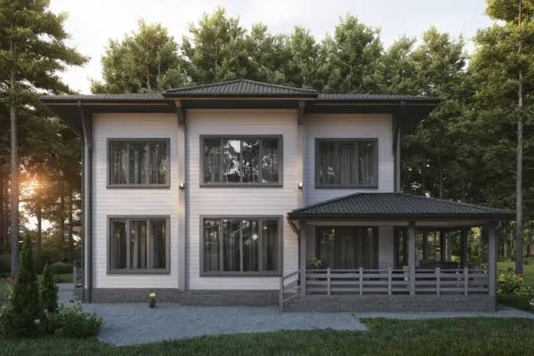
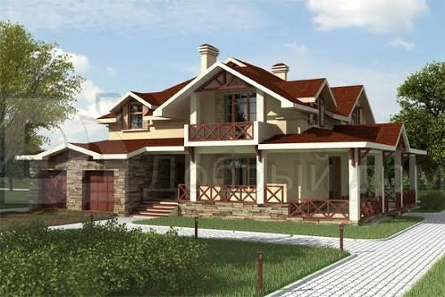
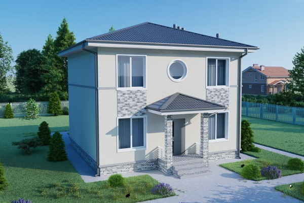
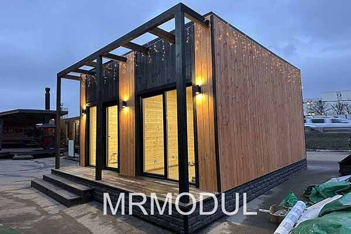
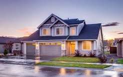
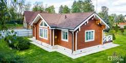

Проекты таунхаусов и блокированных домов
В данном разделе каталога проектов загородных домов размещена выборка архитектурных проектов таунхаусов, домов с возможностью пристройки, блокировки.
|
 Проект D-152-1D
Архитектурный проект дома из бруса. Небольшой, но очень уютный загородный дом.
Площадь: 154.5 м²
Габариты: 11000x9800 Стены: дерево |
 Проект H-173-1P
Дом двухэтажный, с двускатной кровлей.
Площадь: 173.2 м²
Габариты: 12600x8400 Стены: пенобетон |

Проект R-109-1P
Удобный коттедж для постоянного проживания небольшой семьи. Вину - помещение общего пользования...
Площадь: 189 м²
Габариты: 12000x13000 Стены: пенобетон |

Проект V-208-1P
Не очень большой, но очень уютный дом для всей семьи, подходящий как для города, так и для дачи...
Площадь: 207.8 м²
Габариты: 15900x12000 Стены: пенобетон |

Проект B-213-1P
Проект таунхауса.
Площадь: 212.8 м²
Габариты: 13140x12060 Стены: пенобетон |
 Проект N-217-1K
Когда участок под застройку небольше, проблема вновь строящихся домов - близость соседей.
Площадь: 217.3 м²
Габариты: 8540x17500 Стены: кирпич |
|
 Проект D-152-1D
Вариант проекта с комнатой на первом этаже, материал стен газобетон.
Площадь: 154.5 м²
Габариты: 11000x9800 Стены: газобетон |
 Проект H-173-1P
Дом двухэтажный, с двускатной кровлей (вариант с гаражом).
Площадь: 173.2 м²
Габариты: 12600x8400 Стены: пенобетон |
 Проект R-109-1P
Удобный коттедж для постоянного проживания небольшой семьи.
Площадь: 189 м²
Габариты: 12000x13000 Стены: пенобетон |